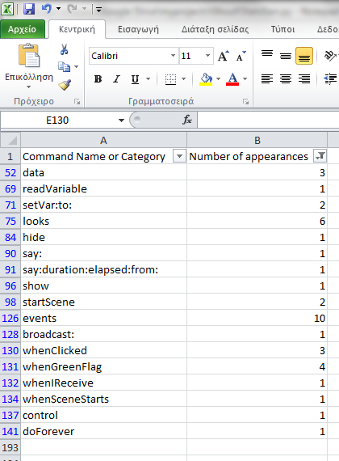
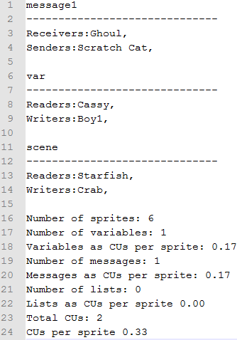

Example
The project
The reports
CSV Report
CSV Report counts the appearance of every command in the project and the command categories also.The csv lists all the Scratch Commands with their appearances.
You can open the file with Excel and filter out the commands without appearances like the image below:

-
There are 3 data commands, 1 readVariable and 2 setVar:to:.
There are 6 looks commands, 1 hide, 1 say:, 1 say:duration:elapsed:from:, 1 show and 2 startScene.
There are 10 events commands, 3 whenClicked, 4 whenGreenFlag, 1 whenIReceive, 1 whenSceneStarts
There is 1 control command, 1 doForever.
CUR Report
You can open the CUR report with your favorite text editor. 
The CUR report illustrates communications between sprites. There is a detailed report for every message and variable. Ghoul also reports which sprites change the background (writers) and which detect this change (readers).
Ghoul example_m_.png

The _m_ image is a graph that illustrates the messages of the Scratch project. In the example there is only one message. Scratch Cat sends it and Ghoul receives it.
Ghoul example_v_.png

The _v_ image is a graph that illustrates the variables of the project. In the example there is only one variable. Boy1 writes it and Cassy reads it.
Ghoul example_s_.png

The _s_ image is a graph that illustrates the communication implemented with backgrounds. In the example Crab changes the background and Starfish detects the change.
Ghoul example_a_.png

The _a_ image is a graph that illustrates all the communications between sprites. It is in fact all the previous graphs combined.
Example
A project
Corresponding graph for messages